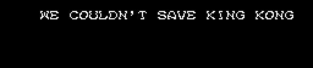
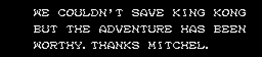
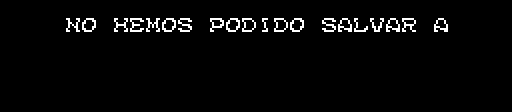
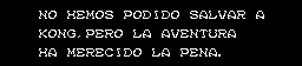

Un arreglo de un byte para la traducción de King Kong 2 de Imanok, Manuel Pazos y Ramones (KING KONG 2 ULTIMATE TRANSLATION, 2012-2013), al inglés y al castellano. No sirve para el cartucho japonés: se aplica después de su parche.
KK2DSKEN.ips (inglés).KK2DSKES.ips (castellano).Arregla el texto del final 0, el que sale cuando se acaba el juego con 366 días o más (p06:A845): la escena de KING KONG, que no se ha podido salvar. En el cartucho japonés son tres renglones. Con la traducción, el texto se queda en el primero y a los pocos segundos sale THE END. Con el arreglo salen los tres, como en el original.
Inglés, sin el arreglo y con él:


Castellano, sin el arreglo y con él:


Dibujado desde la ROM con tools/arreglo_final.py, como lo pinta p06:AADD; cada imagen es igual, punto a punto, a la pantalla de openMSX (tools/lanza_final.sh).
El texto lo escribe p06:AADD letra a letra: 0xFE pasa al renglón siguiente (suma a la x el byte que lo sigue y baja 16 puntos) y 0xFF acaba. En la traducción, entre el primer renglón y el segundo hay un 0xFF donde iba un 0xFE. La rutina se para ahí y el resto del texto, que sigue en la ROM, no lo lee nadie.
El byte que viene detrás lo delata: es justo lo que hay que sumar a la x para volver al principio del renglón, que empieza en x 0x20.
| El primer renglón | Detrás del 0xFF | La x | |
|---|---|---|---|
Inglés, 0xCDFF | WE COULDN'T SAVE KING KONG (26 letras) | 0x30 | 0x20 + 26 × 8 + 0x30 = 0x120: 0x20 |
Castellano, 0xCE11 | NO HEMOS PODIDO SALVAR A (24 letras) | 0x40 | 0x20 + 24 × 8 + 0x40 = 0x120: 0x20 |
El arreglo cambia ese 0xFF por 0xFE, y nada más.
KK2DSKEN.ips o KK2DSKES.ips, de su página).Un IPS no comprueba sobre qué se aplica. tools/arreglo_final.py mira antes que en ese sitio esté el 0xFF, con el primer renglón delante y el 0x30 o el 0x40 detrás, y se para si no.